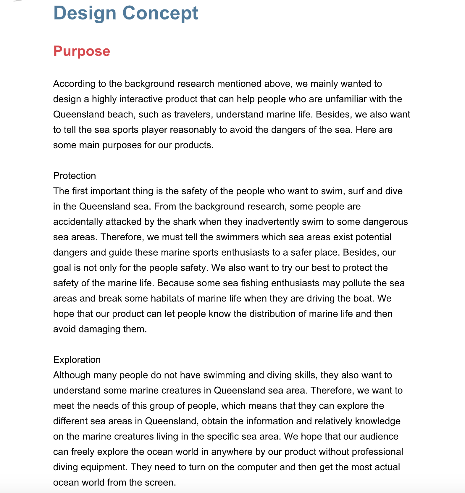
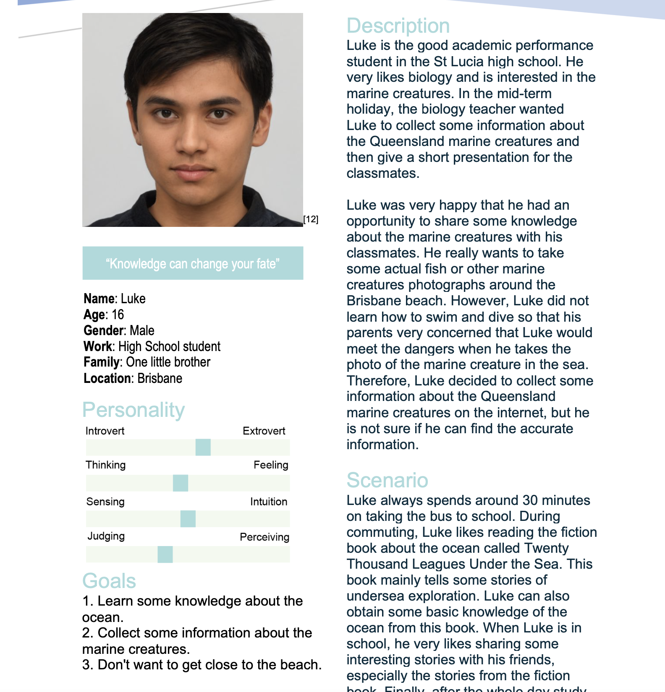
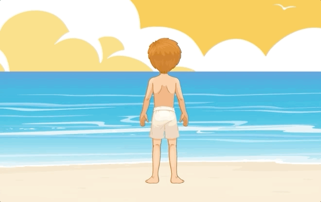
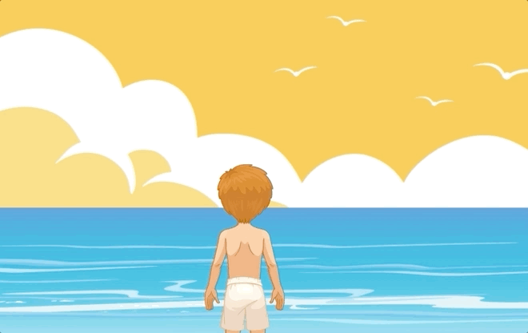
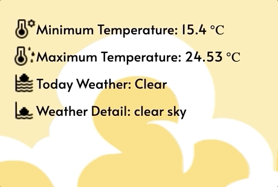
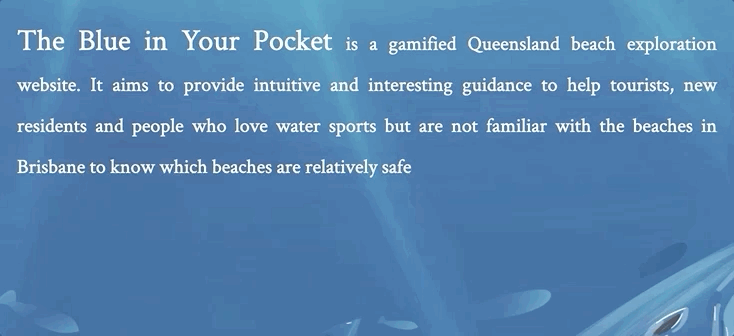
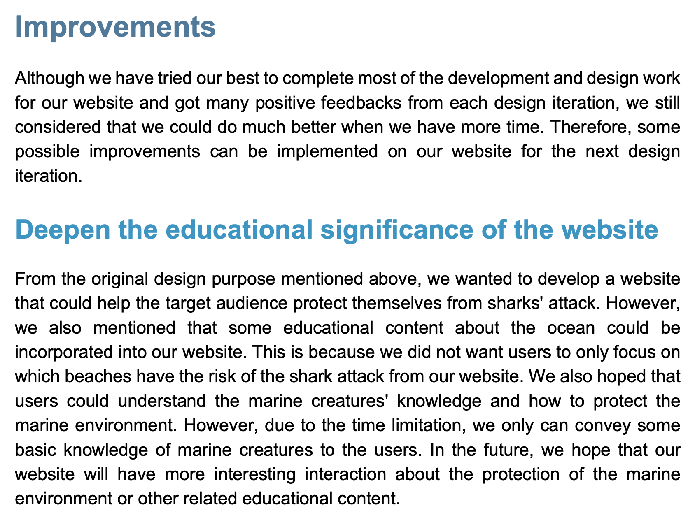
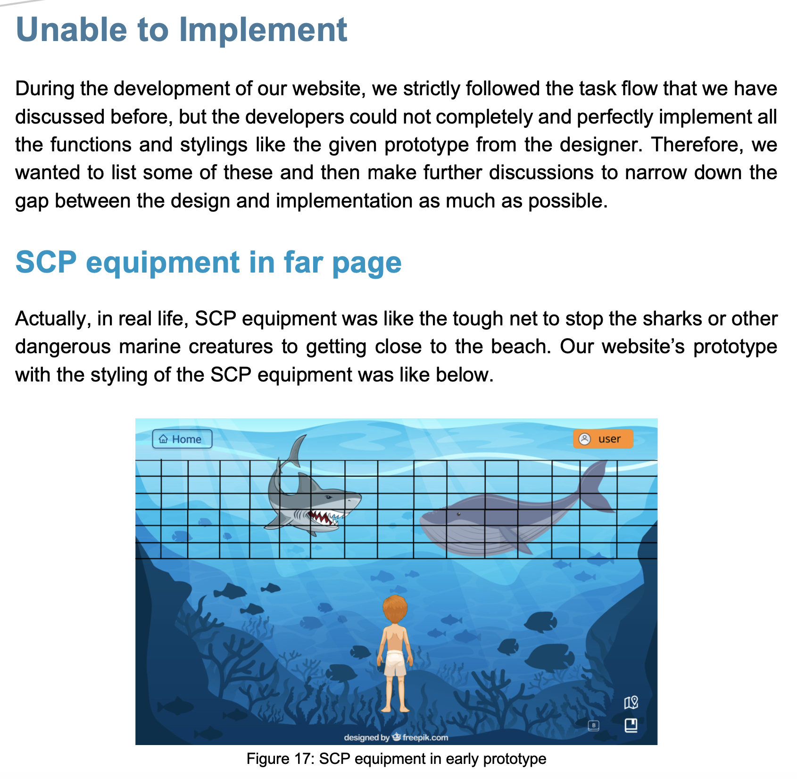

Hello, I am Dechao ZHANG. I have been Australian about two years and I
am majoring in the Information Technology at the University of Queensland.
I very like watching action movie and tasting japanese food.
During the peroid of the postgraduate study at University of Queensland, I have learned some knowledge about the Python, Java, PHP and SQL Database. Besides, I also have some experience of the full-stack development and human centred design.
Here is my skill proficiency, if you have some problems of the web development, feel free to contact me!
During the peroid of the postgraduate study at University of Queensland, I have learned some knowledge about the Python, Java, PHP and SQL Database. Besides, I also have some experience of the full-stack development and human centred design.
Here is my skill proficiency, if you have some problems of the web development, feel free to contact me!
Web Development
Python
Java
PHP
MySQL
Cloud Services
Design Exploration
My Work
For my poster, I very wanted to design a product for the parents who can better protect their children. The reason why I selected this topic was that according to lots of background research such as child death report and the dataset of child deaths case review from Queensland Open Data Portal, I found that most of the common causes of child death were the neglection of parents. Besides, many children in Australia were dead because of some avoidable accidents, which means that if the parents understand more knowledge to protect their children, these children can totally avoid the dangers. Finally, I put the related personas, storyboard and rough prototype in the poster and made the simple rehearsal for my poster presentation.Reflection
From the feedback of the tutors and students, they said that my poster did not have graphically rich content. I considered that I only expressed my idea in the poster with the plain text instead of combining the graphical content and text content. Therefore, from my second journal, I reflected that the audience may prefer short text description with some vivid visual content and in the future, I will concentrate on expressing my idea creatively by using the text content and related images.Major Project
Part A
In part A, I was allocated to complete the two parts of the report. The first part was the design propose and the other part was the persona.For the design propose, I firstly figured out what were our goals and what benefits can we bring to the potential users according to our product. After the team discussion, I decided that we can have three different design proposes (Protection, Exploration and Education) for the target audience. Protection means that users can know which sea areas in Queensland are dangerous and then avoid them before the sea sport from our website. Exploration helps users explore different marine creatures and the Education means that users can learn some knowledge about the marine creatures.
For the persona part, I thought the people who liked going to the beach would be our target audience. About the age scope of the target audience, I originally considered that the scope was from 18 years old to 50 years old. However, after did some background research and adopt some suggestions from the team members. I expanded the age scope upper to 70 years old. This is because we found that the aged also had the passion for going to the beach to relax.


Part A Reflection
From the design propose part, my reflection was that a good design should meet the users’ needs and bring the benefits such as educational content or relaxed content to the users at the same time. From the persona part, I want to reflect that I cannot just follow my ideas, I should do more research and communicate with the team members more to get the persona that was closest to the actual users.Part B
In part B, I was mainly responsible for the functionality implementation of our website. Firstly, I concentrated on the character movement by using the JavaScript Events function. I used the JavaScript to bind the keyboard event, which can let users press the “Up”, “Down”, “Left”, “Right” key to control the character movement in four directions from our website.

Besides, I also implement the loading spinner for improving the users’ experience when they want to see some high-quality marine creatures’ images in our website.

Finally, I also implemented the fish movement animation and used the JavaScript mouse click event to help the users know related information after users click the specific fish.


Additionally, I also helped the presenters to prepare the MVP presentation. I was in charge of timing and gave some suggestions to make the presenters express as much content as possible within 5 minutes.
Part B Reflection
For the implementation part, after the functionality testing from my team members, they found that when they keep pressing the “Down” key on the keyboard, the character will not stop and the outer div box will also be stretched continuously. This is because I forget to set the limitation for the character, which means that the character can move infinitely if the users do not release the key. From this feedback, I reflect that I should be more careful and consider more boundary conditions during the function development.After the MVP presentation, the main feedback of the tutors and students was that our speed of speech was too fast although we could express all our ideas within limited time. I considered it was my fault because I always wanted my team members to present all the work that we have done, which means that the presenter needed to speed up during the presentation. Now, I reflect that the speaker only needs to express some key ideas during the presentation instead of all ideas. Besides, if we also can leave 1 to 2 seconds as the thinking time of audience after each part of the presentation, the users may have better experience.
Part C
In part C, for the website development, I implemented the weather forecast function for the website by retrieving the next 7 days weather of Brisbane from the OpenWeather API and then display it in the home page. I used the jQuery AJAX method to help the users know the future weather without reloading the web page.

To make our website more vivid, I also implemented the word dancing function for the landing page by using the JavaScript “setTimeout()” and “setInterval()” function.

In addition, for the final report, I completed the Reflection Part (Improvements and Unable Finish part) based on the final users testing. I collect the negative feedback from the potential users during the website evaluation and then discussed with my teammates to make the future improvement plan.


Finally, I actively participated in the rehearsal of the EXPO and put forward many useful suggestions for better displaying our product in the tradeshow.
Part C Reflection
For the word dancing function, I reflected that if we want to show the plain text such as website introduction to the users in our website, the users may be unwilling to look through the whole paragraph. Some users even skip the text. Therefore, we can change the presenting style of the word content to arise the users’ interest. For example, we can make the word of text jump out one by one to attract the users’ attention.According to the users testing, I clearly knew the shortcomings of our website and how to better improve them. Therefore, I reflected that the user testing was very important in the design process, mainly because it can help the developers and designers quickly find out the downsides of the product and make related improvement.